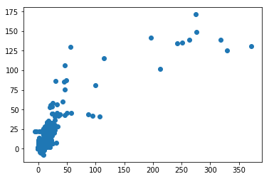

Version 1.0.1
Check your versions
1 | import numpy as np |
numpy 1.13.1
pandas 0.20.3
scipy 0.19.1
sklearn 0.19.0
lightgbm 2.0.6
Important! There is a huge chance that the assignment will be impossible to pass if the versions of lighgbm and scikit-learn are wrong. The versions being tested:
numpy 1.13.1
pandas 0.20.3
scipy 0.19.1
sklearn 0.19.0
ligthgbm 2.0.6
To install an older version of lighgbm you may use the following command:1
2pip uninstall lightgbm
pip install lightgbm==2.0.6
Ensembling
In this programming assignment you are asked to implement two ensembling schemes: simple linear mix and stacking.
We will spend several cells to load data and create feature matrix, you can scroll down this part or try to understand what’s happening.
1 | import pandas as pd |
Load data subset
Let’s load the data from the hard drive first.
1 | sales = pd.read_csv('../readonly/final_project_data/sales_train.csv.gz') |
And use only 3 shops for simplicity.
1 | sales = sales[sales['shop_id'].isin([26, 27, 28])] |
1 | print(sales.shape) |
(301510, 6)
| date | date_block_num | shop_id | item_id | item_price | item_cnt_day | |
|---|---|---|---|---|---|---|
| 15036 | 05.01.2013 | 0 | 28 | 7738 | 199.0 | 1.0 |
| 15037 | 07.01.2013 | 0 | 28 | 7738 | 199.0 | 1.0 |
| 15038 | 19.01.2013 | 0 | 28 | 7738 | 199.0 | 1.0 |
| 15039 | 03.01.2013 | 0 | 28 | 7737 | 199.0 | 1.0 |
| 15040 | 04.01.2013 | 0 | 28 | 7737 | 199.0 | 1.0 |
Get a feature matrix
We now need to prepare the features. This part is all implemented for you.
1 | # Create "grid" with columns |
(278619, 3)
| shop_id | item_id | date_block_num | |
|---|---|---|---|
| 0 | 28 | 7738 | 0 |
| 1 | 28 | 7737 | 0 |
| 2 | 28 | 7770 | 0 |
| 3 | 28 | 7664 | 0 |
| 4 | 28 | 7814 | 0 |
1 | # Groupby data to get shop-item-month aggregates |
/opt/conda/lib/python3.6/site-packages/pandas/core/groupby.py:4036: FutureWarning: using a dict with renaming is deprecated and will be removed in a future version
return super(DataFrameGroupBy, self).aggregate(arg, *args, **kwargs)
(145463, 4)
| shop_id | item_id | date_block_num | target | |
|---|---|---|---|---|
| 0 | 26 | 27 | 0 | 1.0 |
| 1 | 26 | 27 | 10 | 1.0 |
| 2 | 26 | 27 | 14 | 1.0 |
| 3 | 26 | 28 | 8 | 1.0 |
| 4 | 26 | 28 | 9 | 1.0 |
1 | # Join it to the grid |
(278619, 4)
| shop_id | item_id | date_block_num | target | |
|---|---|---|---|---|
| 0 | 28 | 7738 | 0 | 4.0 |
| 1 | 28 | 7737 | 0 | 10.0 |
| 2 | 28 | 7770 | 0 | 6.0 |
| 3 | 28 | 7664 | 0 | 1.0 |
| 4 | 28 | 7814 | 0 | 2.0 |
1 | # Same as above but with shop-month aggregates |
(278619, 5)
/opt/conda/lib/python3.6/site-packages/pandas/core/groupby.py:4036: FutureWarning: using a dict with renaming is deprecated and will be removed in a future version
return super(DataFrameGroupBy, self).aggregate(arg, *args, **kwargs)
| shop_id | item_id | date_block_num | target | target_shop | |
|---|---|---|---|---|---|
| 0 | 28 | 7738 | 0 | 4.0 | 7057.0 |
| 1 | 28 | 7737 | 0 | 10.0 | 7057.0 |
| 2 | 28 | 7770 | 0 | 6.0 | 7057.0 |
| 3 | 28 | 7664 | 0 | 1.0 | 7057.0 |
| 4 | 28 | 7814 | 0 | 2.0 | 7057.0 |
1 | # Same as above but with item-month aggregates |
/opt/conda/lib/python3.6/site-packages/pandas/core/groupby.py:4036: FutureWarning: using a dict with renaming is deprecated and will be removed in a future version
return super(DataFrameGroupBy, self).aggregate(arg, *args, **kwargs)
(278619, 6)
| shop_id | item_id | date_block_num | target | target_shop | target_item | |
|---|---|---|---|---|---|---|
| 0 | 28 | 7738 | 0 | 4.0 | 7057.0 | 11.0 |
| 1 | 28 | 7737 | 0 | 10.0 | 7057.0 | 16.0 |
| 2 | 28 | 7770 | 0 | 6.0 | 7057.0 | 10.0 |
| 3 | 28 | 7664 | 0 | 1.0 | 7057.0 | 1.0 |
| 4 | 28 | 7814 | 0 | 2.0 | 7057.0 | 6.0 |
1 | # Downcast dtypes from 64 to 32 bit to save memory |
After creating a grid, we can calculate some features. We will use lags from [1, 2, 3, 4, 5, 12] months ago.
1 | # List of columns that we will use to create lags |
Train/test split
For a sake of the programming assignment, let’s artificially split the data into train and test. We will treat last month data as the test set.
1 | # Save `date_block_num`, as we can't use them as features, but will need them to split the dataset into parts |
Test `date_block_num` is 33
1 | dates_train = dates[dates < last_block] |
First level models
You need to implement a basic stacking scheme. We have a time component here, so we will use scheme f) from the reading material. Recall, that we always use first level models to build two datasets: test meta-features and 2-nd level train-metafetures. Let’s see how we get test meta-features first.
Test meta-features
Firts, we will run linear regression on numeric columns and get predictions for the last month.
1 | lr = LinearRegression() |
Test R-squared for linreg is 0.743180
And the we run LightGBM.
1 | lgb_params = { |
Test R-squared for LightGBM is 0.738391
Finally, concatenate test predictions to get test meta-features.
1 | X_test_level2 = np.c_[pred_lr, pred_lgb] |
1 | pred_lr |
array([ 13.45896153, 3.18599444, 2.5028209 , ..., 0.69860529,
0.12072911, 0.1755516 ])
1 | X_test_level2 |
array([[ 13.45896153, 13.37831474],
[ 3.18599444, 2.55590212],
[ 2.5028209 , 1.52356814],
...,
[ 0.69860529, 0.41663964],
[ 0.12072911, 0.34056468],
[ 0.1755516 , 0.32987826]])
Train meta-features
Now it is your turn to write the code. You need to implement scheme f) from the reading material. Here, we will use duration T equal to month and M=15.
That is, you need to get predictions (meta-features) from linear regression and LightGBM for months 27, 28, 29, 30, 31, 32. Use the same parameters as in above models.
1 | dates_train.unique(),dates_train.unique().shape |
(array([12, 13, 14, 15, 16, 17, 18, 19, 20, 21, 22, 23, 24, 25, 26, 27, 28,
29, 30, 31, 32]), (21,))
1 | dates_train_level2 = dates_train[dates_train.isin([27, 28, 29, 30, 31, 32])] |
1 | # And here we create 2nd level feeature matrix, init it with zeros first |
27
/opt/conda/lib/python3.6/site-packages/ipykernel_launcher.py:22: UserWarning: Boolean Series key will be reindexed to match DataFrame index.
28
29
30
31
32
1 | X_train_level2.shape |
(34404, 2)
Remember, the ensembles work best, when first level models are diverse. We can qualitatively analyze the diversity by examinig scatter plot between the two metafeatures. Plot the scatter plot below.
1 | # YOUR CODE GOES HERE |
<matplotlib.collections.PathCollection at 0x7f2ea416f278>

Ensembling
Now, when the meta-features are created, we can ensemble our first level models.
Simple convex mix
Let’s start with simple linear convex mix:
We need to find an optimal $\alpha$. And it is very easy, as it is feasible to do grid search. Next, find the optimal $\alpha$ out of alphas_to_try array. Remember, that you need to use train meta-features (not test) when searching for $\alpha$.
1 | alphas_to_try = np.linspace(0, 1, 1001) |
Best alpha: 0.765000; Corresponding r2 score on train: 0.627255
Now use the $\alpha$ you’ve found to compute predictions for the test set
1 | test_preds = best_alpha * X_test_level2[:,0] + (1- best_alpha) * X_test_level2[:,1] |
Test R-squared for simple mix is 0.781144
Stacking
Now, we will try a more advanced ensembling technique. Fit a linear regression model to the meta-features. Use the same parameters as in the model above.
1 | # YOUR CODE GOES HERE |
LinearRegression(copy_X=True, fit_intercept=True, n_jobs=1, normalize=False)
Compute R-squared on the train and test sets.
1 | train_preds = meta_model.predict(X_train_level2) # YOUR CODE GOES HERE |
Train R-squared for stacking is 0.632176
Test R-squared for stacking is 0.771297
Interesting, that the score turned out to be lower than in previous method. Although the model is very simple (just 3 parameters) and, in fact, mixes predictions linearly, it looks like it managed to overfit. Examine and compare train and test scores for the two methods.
And of course this particular case does not mean simple mix is always better than stacking.
We all done! Submit everything we need to the grader now.
1 | from grader import Grader |
Current answer for task best_alpha is: 0.765
Current answer for task r2_train_simple_mix is: 0.627255043446
Current answer for task r2_test_simple_mix is: 0.781144169579
Current answer for task r2_train_stacking is: 0.632175561459
Current answer for task r2_test_stacking is: 0.771297132342
1 | STUDENT_EMAIL = "lvduzhen@gmail.com" |
You want to submit these numbers:
Task best_alpha: 0.765
Task r2_train_simple_mix: 0.627255043446
Task r2_test_simple_mix: 0.781144169579
Task r2_train_stacking: 0.632175561459
Task r2_test_stacking: 0.771297132342
1 | grader.submit(STUDENT_EMAIL, STUDENT_TOKEN) |
Submitted to Coursera platform. See results on assignment page!
1 |